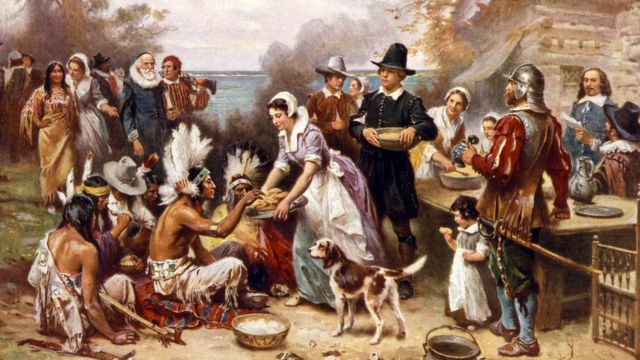
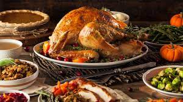

¿En que parte del mundo se celebra?
El Día de Acción de Gracias se celebra en Estados Unidos para honrar la historia de los peregrinos y su éxito en la cosecha de 1621.
Tradiciones
El cuarto jueves de diciembre se acostumbra asistir a la misa, preparar y compartir una comida especial, compartir historias de familia y jugar juegos. Muchas personas también realizan actividades de servicio comunitario como cocinar comida para los necesitados.
Mi día
En mi caso podría pasar el día con mi familia haciendo algunas de las actividades que se realizan en Estados Unidos. Por ejemplo, podría preparar una comida especial para compartir, pasar tiempo compartiendo historias de familia y jugar juegos divertidos. También podría dedicar el día a realizar actividades de servicio comunitario, como donar alimentos a la comunidad local.